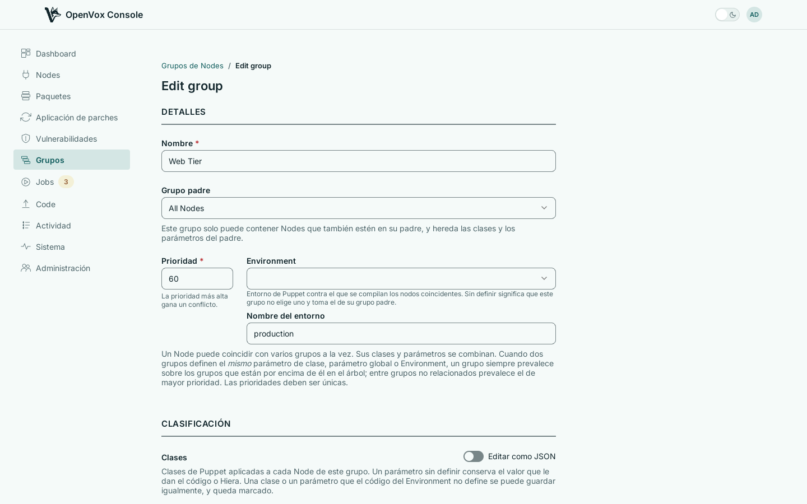

Usar
Clasificar Nodes
Decida qué clases, parámetros y Environment recibe cada Node, con un árbol de grupos de Nodes que coinciden por Facts o se fijan por nombre.
openvoxserver pregunta a la consola qué debe ser cada Node: qué clases incluye, con qué parámetros y de qué Environment procede su código. La consola responde a partir de sus grupos de Nodes. La clasificación solo llega a openvoxserver una vez conectada, algo que explican las dos guías de instalación.
Ver los grupos requiere classifier:read; crearlos, cambiarlos y eliminarlos requiere classifier:write.
Los grupos forman un árbol
Cada grupo tiene un padre. En lo más alto está All Nodes, un grupo integrado al que pertenecen todos los Nodes. No puede eliminarlo, renombrarlo ni moverlo, y no tiene regla ni Nodes fijados, pero puede darle clases, parámetros y un Environment, que entonces se aplican a toda la flota.
Un grupo solo puede contener Nodes que también estén en su padre. Así, un grupo bajo Linux Servers nunca recoge un Node Windows, diga lo que diga su propia regla, y los Nodes de un grupo son siempre un subconjunto de los de su padre. Un grupo nuevo va directamente bajo All Nodes salvo que elija otro padre.
Un grupo no puede moverse bajo sí mismo ni bajo uno de los grupos que tiene por debajo, y un grupo que aún tiene grupos por debajo no puede eliminarse: mueva o elimine esos primero.
Tampoco puede eliminarse un grupo sobre el que se ha concedido un rol, porque eso quitaría sin avisar el acceso que da el rol. Quite primero el grupo del rol, en la página Roles; consulte Usuarios, roles y tokens.
Cómo decide un grupo a qué Nodes se aplica
Un grupo se aplica a un Node cuando el Node está en el padre del grupo y, además:
- el Node está fijado a él por nombre, o
- los Facts del Node cumplen la regla de coincidencia del grupo: todas sus condiciones, o cualquiera de ellas, según cómo esté configurado el grupo.
Un grupo sin condiciones y sin Nodes fijados no se aplica a ningún Node. Una regla vacía, a propósito, no significa «todos», para que un grupo a medio hacer no pueda apoderarse de la flota.
Una fijación prevalece sobre la regla propia del grupo, no sobre su padre. Un Node fijado a un grupo cuyo padre no lo contiene no está en el grupo, y la página del grupo lista esas fijaciones para que una sin efecto no pase desapercibida.
Cada condición compara un Fact con un valor:
| Operador | Coincide cuando el Fact |
|---|---|
= |
es igual al valor |
!= |
es distinto del valor |
~ |
coincide con el valor como expresión regular |
> < >= <= |
compara de esa forma, numéricamente cuando ambos lados son números |
Los Facts se nombran por su ruta, con puntos para los Facts estructurados: os.family, os.release.major, networking.domain.
Crear un grupo
- Abra Grupos y cree un grupo.
- Póngale nombre, elija su grupo padre y elija su Environment si debe definir uno. El Environment es una lista desplegable. Sin definir (que indica lo que el grupo hereda entonces de su padre) deja la elección al padre. Debajo aparecen los Environments que reporta openvoxserver. Otro... abre un campo de texto para un nombre que aún no está en la lista, como una rama a la que acaba de hacer push, o para cuando no se pudo cargar la lista.
- Añada clases, cada una con los parámetros que necesite, y los parámetros de ámbito superior que quiera. Consulte Elegir clases más abajo.
- Construya su regla de coincidencia, una condición por fila: una ruta de Fact, un operador y un valor. Elija si un Node debe cumplir todas las condiciones o cualquiera de ellas. El editor se niega a guardar una condición sin ruta de Fact, o con una expresión regular que no compila, y muestra qué fila es incorrecta.
- Fije por certname los Nodes que deban pertenecer al grupo sean cuales sean sus Facts.
- Asígnele una prioridad y guarde.


La lista de grupos muestra el árbol, cada grupo bajo su padre, con cuántos Nodes coincide cada uno ahora mismo, así que una regla que no coincide con nada, o con todo, se ve de inmediato.
Editar como JSON muestra la regla como JSON sin procesar, para pegar una regla o escribir una forma que el editor de filas no ofrece. Sus comprobaciones son las del editor de filas: una regla guardada como JSON, o a través de la API, con una ruta de Fact vacía o una expresión regular rota se acepta, y simplemente nunca coincide.
Elegir clases
La consola lee de openvoxserver las clases que define su código desplegado, así que las clases de un grupo se eligen, no se escriben.
- En Clases, empiece a escribir en Añadir una clase, elija la clase y añádala.
- Para definir uno de sus parámetros, elíjalo en Definir un parámetro. El campo que aparece se ajusta al tipo del parámetro: una elección para un Boolean o un Enum, un número para un Integer o un Float, texto para un String. Su nota muestra el tipo y el valor por defecto del código. Cualquier otro tipo se introduce como JSON, así que el texto necesita comillas dobles:
"value",["a", "b"]. - Omita un parámetro para conservar el valor que le da el código o Hiera. Quite un parámetro para volver a ese valor.
Las clases proceden del Environment del grupo: el suyo propio o, si no, el del padre más cercano que defina uno o, si no, production. La página indica cuál, y cuándo se leyó la lista. Un Node que también coincide con otro grupo que define un Environment distinto compila contra ese, algo que el grupo no puede saber.
La lista se reutiliza durante cinco minutos y se vuelve a leer tras un deploy de código. Actualizar clases la lee al instante, y requiere classifier:write.
openvoxserver mantiene su propia caché de cada Environment. Si está configurado para conservar los Environments indefinidamente, como lo está la imagen de contenedor, una clase añadida por código nuevo no aparece hasta que se vacía esa caché, el mismo vaciado que necesita un catálogo para ver el código nuevo. Consulte Instalar con contenedores.
Editar como JSON muestra las clases como JSON sin procesar, para pegarlas.
Clases que no coinciden con el código
Un grupo puede nombrar una clase que el Environment no define, definir un parámetro que la clase no declara o dar un valor que no encaja con el tipo del parámetro. Ocurre cuando se renombra o se elimina una clase en el código, o cuando el grupo se guarda antes de desplegar el código.
La página del grupo marca cada una, y la lista de grupos muestra Clase no coincidente en el grupo. Son solo avisos:
- El grupo se guarda tal cual. No se quita ni se cambia nada.
- Los Nodes se siguen clasificando con la clase. Un Node cuyo catálogo necesita una clase que no existe no compila, con
Could not find class, hasta que se cambie el código o el grupo. - Solo se comprueban los tipos que la consola puede comprobar. Un valor de cualquier otro tipo nunca se marca.
No se marca nada como ausente cuando no se puede analizar uno de los manifiestos del Environment, ya que la clase podría estar en ese manifiesto. En su lugar, la página lista los manifiestos y sus errores.
Cuando la lista no está disponible
La página indica el motivo, y las clases y los parámetros se escriben por nombre. No se marca nada, y el guardado y la clasificación funcionan con normalidad. Las causas:
- La consola no tiene conexión con openvoxserver. Defina
CONSOLE_PUPPET_SERVER_URL. - openvoxserver no permite a la consola leer las clases. Añada la regla de la guía de instalación: contenedores o paquetes.
- No se pudo alcanzar openvoxserver. Si la lista se leyó antes, se ofrece esa lista anterior, marcada como posiblemente desactualizada.
Cuando los grupos se solapan
Un Node que coincide con varios grupos recibe todo de todos ellos: cada clase, cada parámetro. Como un Node de un grupo está también en todos los grupos por encima de él, un grupo hereda todo lo que esos grupos definen y él no.
Cuando dos grupos definen la misma cosa de forma distinta (el mismo parámetro de clase, el mismo parámetro de ámbito superior o el Environment), deciden dos reglas, en este orden:
- Un grupo siempre gana a los grupos que tiene por encima. El valor de un hijo prevalece sobre el de su padre, el de su abuelo y así sucesivamente, sean cuales sean sus prioridades.
- Entre grupos en los que ninguno está por encima del otro, gana la prioridad más alta.
Además, un grupo cuenta como de rango al menos igual al de su padre. Tome un padre con prioridad 10, su hijo con prioridad 1 y un grupo no relacionado con prioridad 5, todos coincidentes con un mismo Node. El hijo gana a su padre por la primera regla, y también gana al grupo no relacionado, porque cuenta como 10: un refinamiento de un grupo supera a todo lo que ese grupo supera.
Cuando un hijo prevalece sobre una prioridad más alta
Si un grupo define algo de forma distinta a un grupo situado por encima con una prioridad más alta, se sigue usando el valor del hijo, aunque las prioridades por sí solas habrían dicho otra cosa. La consola se lo indica: la página del grupo nombra el padre y los valores afectados al abrirla o guardarla, la lista de grupos marca el grupo con Prevalece sobre la prioridad y el cambio se anota en la página Actividad. Es una advertencia, no un error. No se rechaza nada, y los Nodes se clasifican con normalidad. Para eliminarla, dé al hijo la prioridad más alta o quite el valor de uno de los dos grupos.
Los valores definidos en All Nodes nunca la provocan: se espera que todos los grupos los sobrescriban.
Definir datos de configuración
Los datos de configuración son datos que su código lee con lookup(): un valor para ntp::servers, profile::dns::resolvers o cualquier otra clave de Hiera. Definirlos en un grupo de Nodes los cambia para todos los Nodes del grupo sin commit ni deploy de código.
- Abra el grupo y, en Clases, abra Datos de configuración (JSON).
- Escriba un objeto JSON de claves y valores, por ejemplo
{"ntp::servers": ["0.pool.ntp.org"], "dns::timeout": 5}. Un valor puede ser cualquier JSON: una cadena, un número, un booleano, una lista, un objeto onull. - Guarde el grupo. Los Nodes lo aplican en su siguiente ejecución de Puppet.
Una clave tiene como máximo 255 caracteres entre letras, dígitos y _ : . -. Un grupo admite hasta 1000 claves, cada valor de hasta 64 KiB. La clave lookup_options se rechaza: es la forma en que Hiera define el comportamiento de fusión, que los datos de configuración no ofrecen.
Qué valor recibe un Node
Los datos de todos los grupos en los que está el Node se combinan con las mismas dos reglas que combinan los parámetros de clase (consulte Cuando los grupos se solapan): un grupo gana a los grupos que tiene por encima, y entre grupos no relacionados gana la prioridad más alta. Una clave definida por el grupo ganador sustituye entera a la misma clave de los demás: si dos grupos definen app::opts como un objeto, sus objetos no se fusionan clave por clave.
Los datos de la consola prevalecen sobre el repositorio de control
Cuando una clave se define tanto aquí como en los datos de Hiera de su repositorio de control, se usa el valor de la consola. Una clave que la consola no define se busca en el repositorio de control como antes. Así, los datos de configuración son el lugar adecuado para un valor que quiera sobrescribir por grupo, y el repositorio de control sigue siendo el lugar para todo lo demás.
No es para secretos
Los datos de configuración se guardan como texto sin cifrar y se muestran a todos los que pueden ver los grupos de Nodes (classifier:read). No ponga en ellos contraseñas ni claves. La página Actividad y el registro de auditoría registran qué claves cambiaron, nunca sus valores.
Si falla la ejecución de un Node
openvoxserver pide a la consola los datos de un Node cada vez que compila un catálogo. Si la consola no puede responder, la compilación falla con un error que nombra la consola, en lugar de construir un catálogo con valores ausentes. Las guías de instalación muestran cómo se configura el servidor para preguntar.
Comprobar qué recibe un Node
La página de un grupo lista los Nodes con los que coincide ahora mismo. Lo que recibe finalmente un Node es la fusión de todos los grupos coincidentes, y el único lugar que muestra esa respuesta completa es el propio enc-bridge: pregúntele en el host de openvoxserver, como muestran las guías de instalación, e imprimirá exactamente lo que se le dice a openvoxserver. Los datos de configuración de un Node van aparte: GET /api/v1/enc/<certname>/data, con el mismo token, los devuelve.
La clasificación surte efecto en la siguiente ejecución de Puppet del Node. Para aplicarla ahora, inicie una ejecución desde la página del grupo, que ejecuta Puppet en todos los Nodes con los que coincide el grupo; consulte Ejecutar Jobs.
Cada cambio en un grupo queda registrado en la página Actividad, con quién lo hizo.
Actualizar desde una versión sin el árbol
La actualización no cambia la clasificación de ningún Node. Cada grupo existente pasa a ser hijo directo de All Nodes, conserva su regla, sus fijaciones y su prioridad, y coincide con todas sus condiciones como antes.
Si ya tenía un grupo llamado "All Nodes", se renombra como All Nodes (previous) y sigue exactamente como estaba, con su propia regla. No se convierte en el grupo integrado, porque eso aplicaría sus clases a Nodes con los que su regla no coincidía. Cuando lo haya revisado, puede mover sus clases al All Nodes integrado y eliminarlo.
Si ejecuta varias instancias de la consola, termine de actualizarlas todas antes de poner un grupo bajo otro. Una instancia que sigue en la versión antigua ignora los padres y clasificaría solo por prioridad. Consulte Ejecutar más instancias.